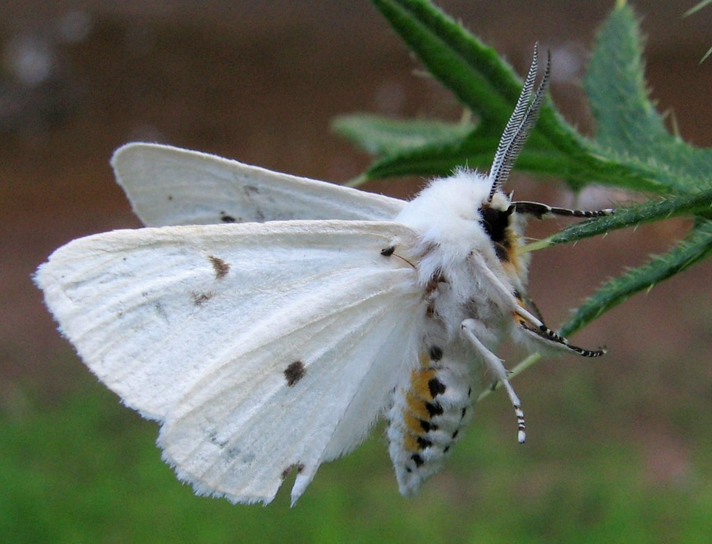

Spilosoma virginica is a species of moth in the subfamily Arctiinae. As a caterpillar, it is known as the yellow woolly bear or yellow bear caterpillar. As an adult, it is known as the Virginia Tiger Moth. The adult moth tends to tent its wings over its back, rather than sitting with them spread. It is white with a darker-colored abdomen, but without the obvious, darker eyes of its close cousin the agreeable tiger moth.
